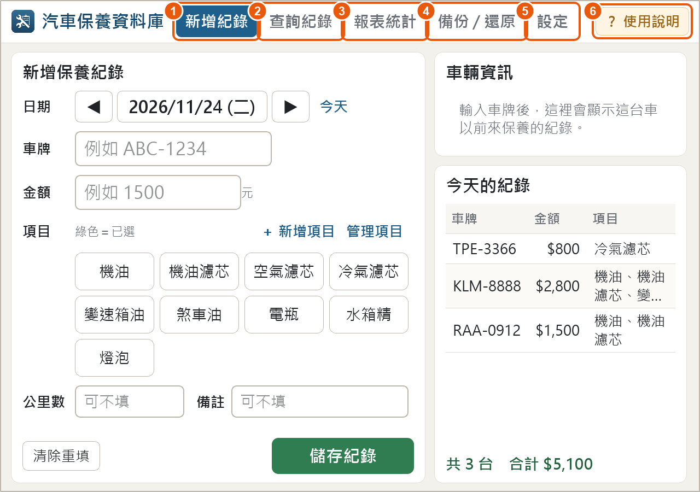
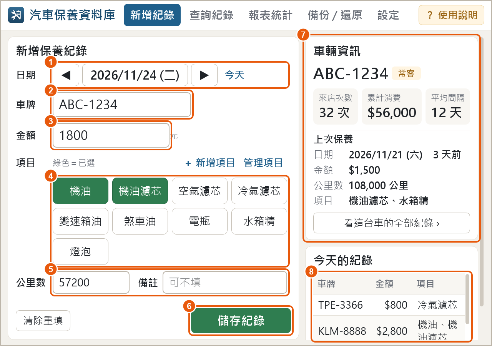
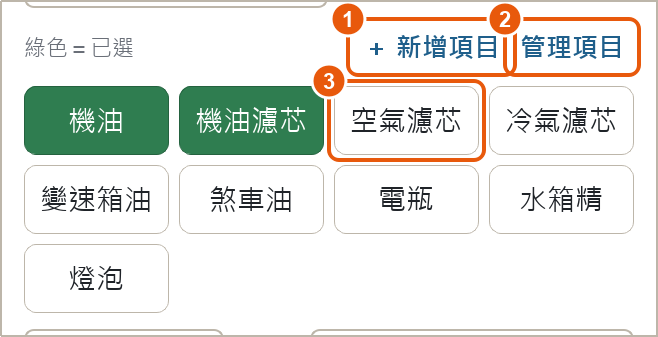
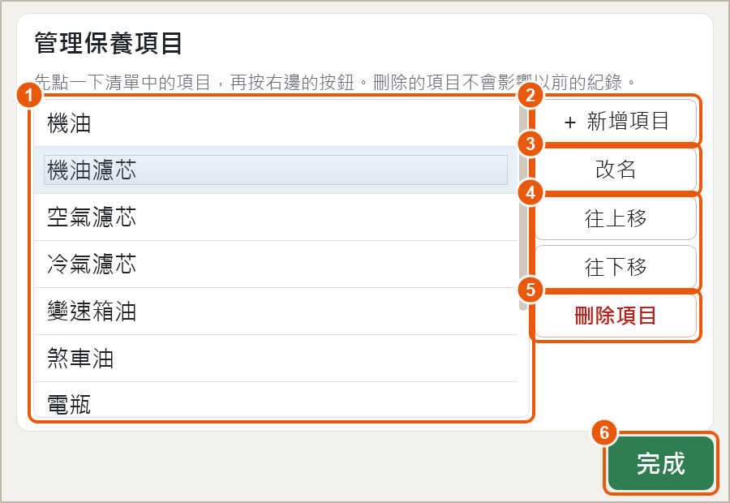
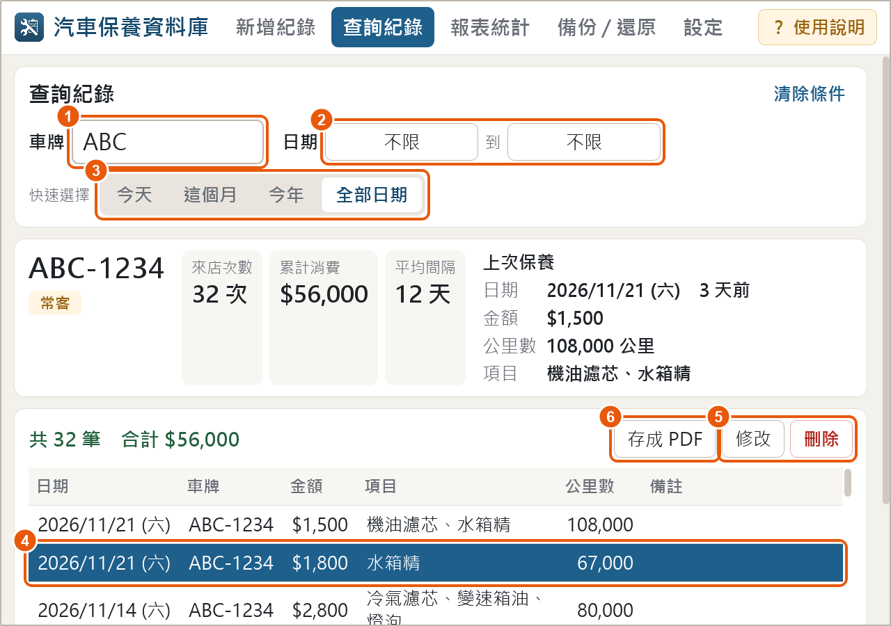
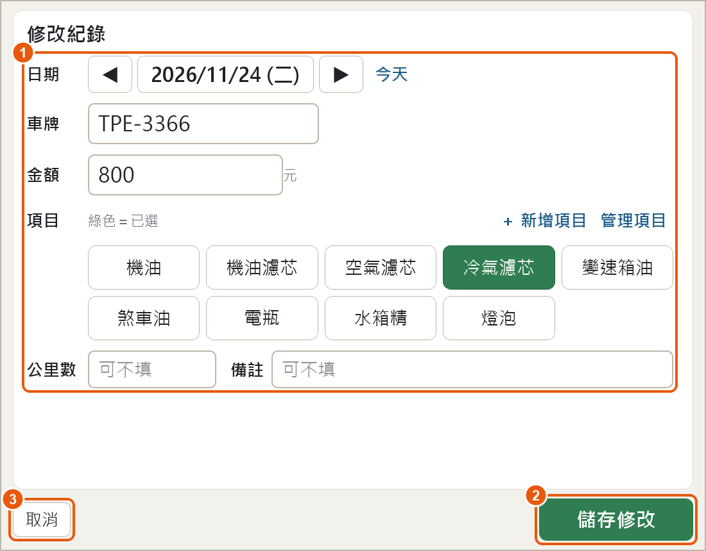
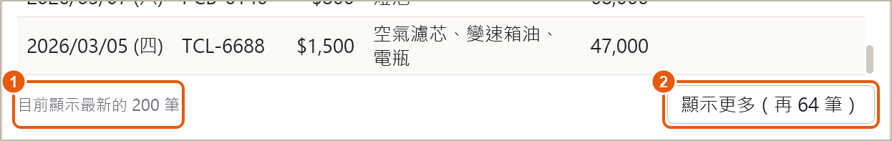
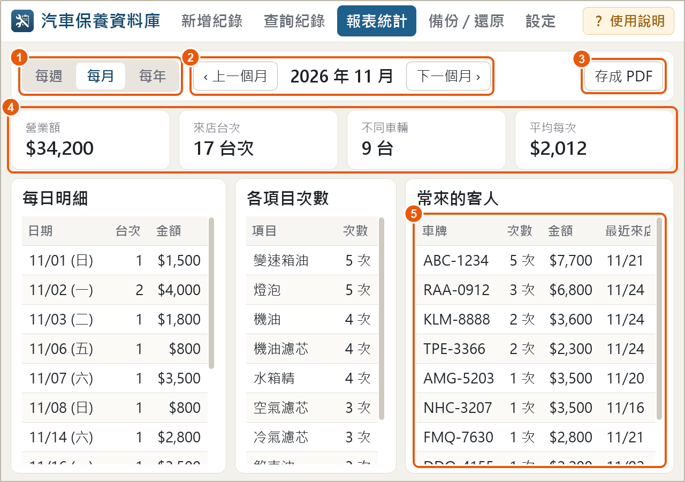
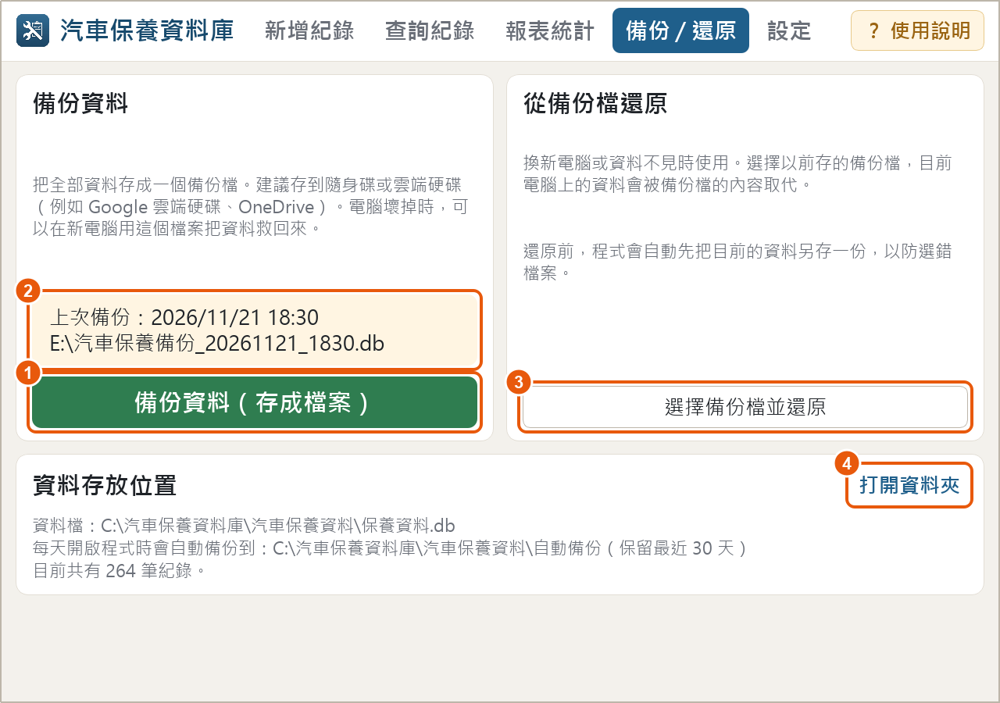
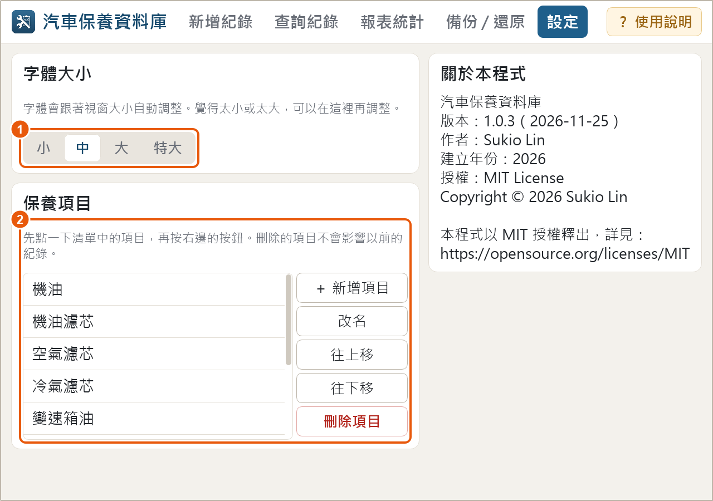

這份說明書會一步一步告訴您怎麼用這個程式。圖上的橘色框框和數字，對照下面的說明 ①②③ 慢慢做就可以了，不用急。
用程式的時候，隨時按右上角的「？ 使用說明」（或鍵盤上的 F1），就會打開這份說明，而且會直接翻到您正在用的那一頁。

最上面一排是按鈕，點哪一個就換到哪一頁：
① 新增紀錄：每台車保養完，在這裡記下來。最常用的就是這一頁。
② 查詢紀錄：找以前的紀錄，打錯的也可以在這裡修改或刪除。
③ 報表統計：看每週、每月、每年做了多少生意。
④ 備份 / 還原：把資料另外存一份到隨身碟，電腦壞了也不怕。
⑤ 設定：字太小可以在這裡調大。
⑥ 使用說明：就是您現在看的這份說明。
| 小提醒 資料都存在這台電腦裡，不用網路也可以用。程式（汽車保養資料庫.exe）和旁邊的「汽車保養資料」資料夾要放在一起，搬家的時候兩個一起搬，不要分開。 |
車子保養完，照著 ① 到 ⑥ 的順序做就好：

① 日期：平常就是今天，不用動。如果是補登前幾天的，按 ◀ ▶ 往前往後換一天，或點中間的日期，從月曆上挑。按「今天」就回到今天。
② 車牌：打車牌號碼，例如 ABC-1234。打小寫也沒關係，程式會自動變大寫；有沒有打中間的「-」，都算同一台車。
③ 金額：打這次收的錢，只要打數字就好，例如 1800。不用打逗號，也不用打「元」。
④ 項目：這次做了哪些，就點一下那個按鈕，變成綠色就是選到了。點錯了再點一次就取消。可以選好幾個。
⑤ 公里數、備註：可以不填。有填公里數的話，下次客人來就知道上次是幾公里換的。
⑥ 最後按綠色的「儲存紀錄」。跳出「已儲存！」就完成了，表格會清空，可以接著打下一台。
⑦ 車輛資訊：這台車以前來過幾次、總共花了多少、平均多久來一次，還有上次保養是哪一天、做了什麼、幾公里。來過三次以上會標「常客」。第一次來的會寫「這是新客人」。按「看這台車的全部紀錄」，會直接跳到查詢紀錄。
⑧ 今天的紀錄：今天已經存了哪幾台車、合計收了多少錢。
|
小提醒 ・還沒存就發現打錯，按左下角的「清除重填」重新來就好。 ・已經存了才發現打錯，到「查詢紀錄」找到那一筆修改（見第四章）。 ・一個項目都沒選就按儲存，程式會先問您一聲，避免忘了選。 |
| 鍵盤小撇步 打完車牌按 Enter，游標會自動跳到金額；按 Ctrl + S 跟按「儲存紀錄」一樣。 |
項目按鈕（機油、機油濾芯…）可以照您店裡的需要自己改。改好以後會一直留著，不用每次重新加。

① ＋ 新增項目：例如店裡開始做「雨刷」，按這個，打「雨刷」，按「確定」，就多一個按鈕了。
② 管理項目：一次整理全部的項目（改名、排順序、刪除）。
③ 在某個項目按鈕上按滑鼠右鍵，可以直接幫那一個改名或刪除。
按「管理項目」（或到「設定」頁）會看到這個畫面：

① 先在清單裡點一下要處理的項目。
② ＋ 新增項目：加一個新的。
③ 改名：例如把「水箱精」改成「水箱水」。以前的紀錄也會跟著顯示新名字。
④ 往上移 / 往下移：常用的排前面，項目按鈕的順序會跟著變。
⑤ 刪除項目：不再做的可以刪掉。放心，以前紀錄上寫的不會不見。
⑥ 弄好了按「完成」。
| 小提醒 刪掉的項目如果之後又要用，再「新增」一次一樣的名字，它就回來了。 |

① 車牌：打車牌就會找出來。只記得一部分也可以，例如只打「ABC」或「1234」。
② 日期：點「不限」可以從月曆挑開始和結束的日期，只看那段時間。
③ 快速選擇：一按就看「今天」、「這個月」、「今年」或「全部日期」。
只找到一台車的時候，中間會出現這台車的統計：來過幾次、總共花多少、平均多久來一次。
④ 在表格裡點一下某一行，那一行會變成藍色，代表選到了。
⑤ 選好以後：按「修改」改那一筆（直接在那一行點兩下也可以）；按「刪除」刪掉那一筆，程式會再問您一次，確定才會刪。
⑥ 存成 PDF：把目前找到的紀錄存成 PDF 檔，可以印出來，或傳給客人看。

① 跟新增的時候一樣，直接改要改的地方（日期、車牌、金額、項目都能改）。
② 改好按「儲存修改」。
③ 不想改了按「取消」，什麼都不會動。

為了讓電腦跑得快，一開始只會列出最新的 200 筆。
① 這裡會寫目前顯示了幾筆。
② 想看更早的，按「顯示更多」，每按一次多 200 筆。
上面的「共 … 筆 合計 …」算的永遠是全部符合的紀錄，不是只有畫面上這些。
|
小提醒 右上角的「清除條件」會把車牌和日期都清掉，回到全部的紀錄。 刪除的紀錄救不回來，按之前請看清楚日期和車牌。 |

① 每週 / 每月 / 每年：選您要看哪一種。每週是算星期一到星期日。
② 上一個月 / 下一個月：往前、往後翻。中間寫的就是現在看的是哪一段時間。
③ 存成 PDF：把這張報表存起來或印出來，給會計也方便。
④ 這段時間的營業額、來店台次（總共做了幾台次）、不同車輛（有幾台不一樣的車）、平均每次收多少。
⑤ 常來的客人：這段時間最常來的車。在車牌上點兩下，會跳到那台車的全部紀錄。
左邊的「每日明細」是每天做了幾台、收了多少（看「每年」的時候會變成每個月）；中間的「各項目次數」是每個項目做了幾次，可以看出哪個最常做。
① 翻到別的月份時，旁邊會出現「回到本月」，按一下就回到這個月。
電腦壞掉、中毒或被偷，裡面的資料就會跟著不見。備份就是把全部資料另外存一份，放在隨身碟或雲端硬碟。建議每個禮拜備份一次，例如每週六打烊前。

1. 先插上隨身碟。
2. 按 ①「備份資料（存成檔案）」。
3. 會跳出存檔的視窗。在左邊點您的隨身碟（通常叫「USB 磁碟機」，或是 E:、F:），檔名不用改，按「存檔」。
4. 看到「備份成功！」就完成了。
② 這裡會寫上次什麼時候備份、存在哪裡。很久沒備份了，就該做一次了。
| 自動備份 程式每天打開的時候，會自動在電腦裡備份一份，保留最近 30 天。不過這份跟程式在同一台電腦裡，電腦壞了就一起壞，所以隨身碟的備份還是要做。 |
1. 在新電腦放好程式，打開它。
2. 按 ③「選擇備份檔並還原」，找到隨身碟裡的備份檔（名字像「汽車保養備份_20261122_1830.db」），按「開啟」。
3. 程式會告訴您：備份檔裡有幾筆、電腦上現在有幾筆。確定沒錯，再按「確定還原」。
|
注意 還原會用備份檔取代電腦上現在的資料。 不過不用太擔心：還原之前，程式會自動先把現在的資料另存一份（在「自動備份」資料夾裡，檔名是「還原前備份_…」），萬一選錯檔案還救得回來。 |
④ 打開資料夾：看資料實際存在電腦的哪裡。

① 字體大小：覺得字太小，就按「大」或「特大」，馬上就會變，下次打開也會記得。字也會跟著視窗大小自動調整，所以視窗開到最大最好看。
② 保養項目：跟「管理項目」一樣，可以新增、改名、排順序、刪除（見第三章）。
右邊的「關於本程式」寫著版本。打電話問問題的時候，可以先告訴對方是哪一版。
到「設定」，字體大小選「大」或「特大」。把視窗放到最大，字也會跟著變大。
沒關係。到「查詢紀錄」打車牌，找到那一筆，點一下再按「修改」，改好按「儲存修改」就好。
刪除的紀錄沒辦法直接救回來。如果那筆很重要，先不要再動程式，請找幫您安裝程式的人，他可以從自動備份幫您找回來。
代表程式已經開了，只是被別的視窗蓋住。看螢幕最下面的工作列，點一下汽車保養資料庫的圖示，它就會跑出來。
在「新增紀錄」日期旁邊按「今天」就回來了。程式如果開著過了半夜，也會自動換成新的一天。
最簡單的方法：把放程式的整個資料夾（程式加上「汽車保養資料」資料夾）一起複製到新電腦。
或是：舊電腦先備份到隨身碟，新電腦放好程式以後，用「還原」把資料放回來（見第六章）。
只要用新的「汽車保養資料庫.exe」蓋掉舊的就好。旁邊的「汽車保養資料」資料夾不要動，資料都還在。
照視窗上寫的，把「錯誤紀錄.log」這個檔案交給維護人員。您的資料不會因為這樣不見。
| 還有其他問題，請找幫您安裝程式的人。 回到目錄 |